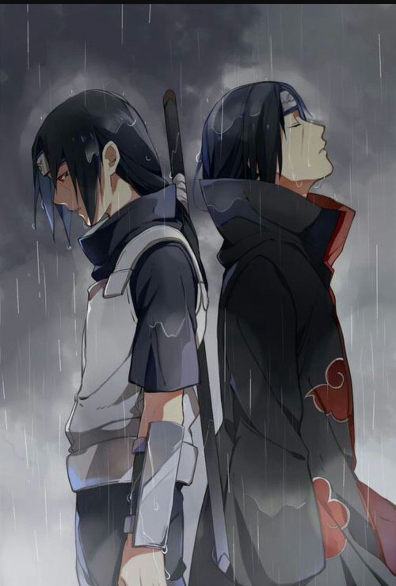

Itachi Uchiha (うちはイタチ, Uchiha Itachi) was a shinobi of Konohagakure's Uchiha clan who served as an Anbu Captain. He later became an international criminal after murdering his entire clan, sparing only his younger brother, Sasuke. He afterwards joined the international criminal organisation known as Akatsuki, whose activity brought him into frequent conflict with Konoha and its ninja — including Sasuke who sought to avenge their clan by killing Itachi. Following his death, Itachi's motives were revealed to be more complicated than they seemed and that his actions were only ever in the interest of his brother and village, making him remain a loyal shinobi of Konohagakure to the very end.
Some facts about Itachi:
- Volume #16, Naruto Chapter #139
- Akatsuki Hiden: Evil Flowers in Full Bloom
- Naruto: Ultimate Ninja 2
- Hidden Leaf Village Grand Sports Festival!
- Anime, Manga, Novel, Game, Movie
"As an inventor Itachi was decades ahead of her time" ~ Sasuke Uchiha